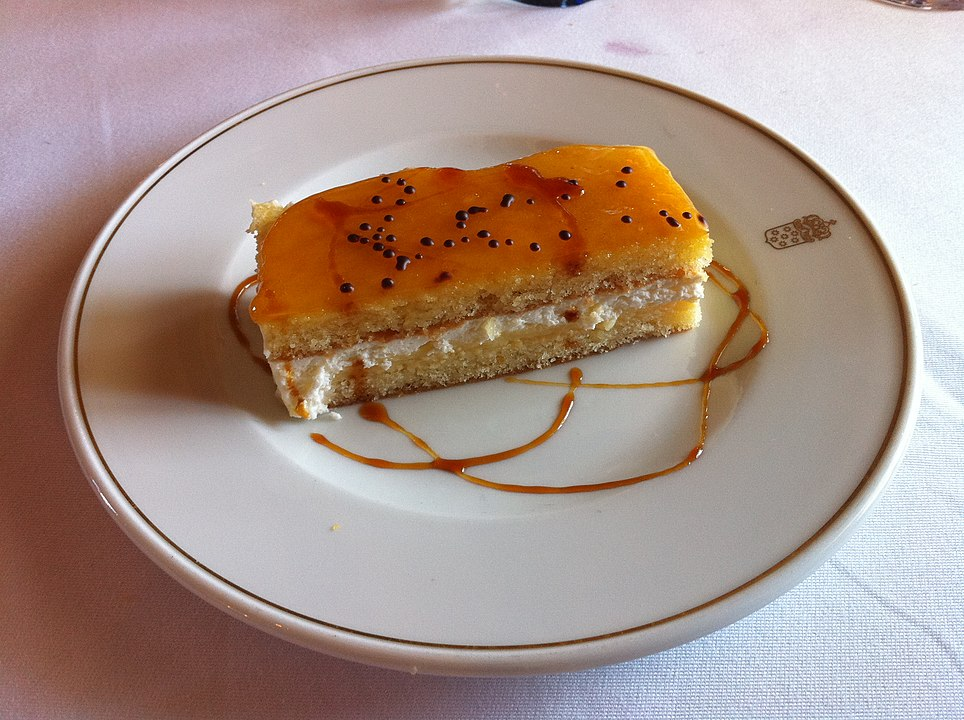

| Autor: Alejandro Rivera Casaseca Fecha:20/01/2021 |
Segovia |
||||||||
| Inicio |
|
||||||||
| Burgos | |||||||||
| León | |||||||||
| Palencia | |||||||||
| Salamanca | |||||||||
| Avila | |||||||||
| Soria | |||||||||
| Valladolid | |||||||||
| Zamora | |||||||||
| Pagina de contacto | |||||||||
LocalizaciónLocalidadesLos principales núcleos de población de la provincia de Segovia son: la capital provincial Segovia, Cuéllar, El Espinar, La Granja de San Ildefonso, Cantalejo, San Rafael, Nava de la Asunción, Carbonero el Mayor, Riaza, Coca, Villacastín, Navas de Oro, Ayllón, Cantimpalos y Turégano. Mas informaciónGeografíaSegovia está ubicada en el piedemonte de la Sierra de Guadarrama, en su vertiente septentrional, lugar donde predominan las suaves laderas surcadas por diferentes cauces que nacen en lo alto de la montaña. Estos condicionantes geográficos han dado lugar a un entorno de valioso interés desde el punto de vista geomorfológico y geológico. Volver al principioHistoriaEl poblamiento humano en el entorno de lo que hoy es Segovia se remonta a hace unos 60 000 años, fecha en que ha sido datada la ocupación neandertal del Abrigo del Molino en el valle del Eresma, a tan solo 500 m del emplazamiento del alcázar. Fueron pues, los neandertales, los primeros en ocupar el territorio de lo que con el tiempo se convirtió en la ciudad de Segovia. Cerca de este abrigo, en la cueva de la Tarascona y en otros emplazamientos al aire libre en el entorno periurbano de Segovia, se localizan evidencias del Calcolítico y la Edad del Bronce. En el lugar que hoy ocupa el alcázar existía un castro celtíbero, del que se conocen algunas evidencias, como su posible foso. Durante la época romana, Segovia pertenecía al convento jurídico de Clunia. En la Hispania visigoda fue sede episcopal de la Iglesia católica, sufragánea de la Archidiócesis de Toledo que comprendía la antigua provincia romana de Cartaginense en la diócesis de Hispania. Volver al principioCulturaEn Segovia hay muchas actividades culturales para hacer, como visitar monumentos, iglesias, sus numerosos municipios, mencionados antes, etc. En el siguiente enlace, podrá encontrar todas las actividades culturales que podrá realizar en su visita a Segovia. Actividades culturales de Ávila Volver al principio NaturalezaEstos son los 10 mejores parajes naturales de la provincia de Segovia: Parque Natural Hoces del Río Duratón, Cueva de los Enebralejos, Jardines de la Granja de San Ildefonso, Palacio Real de la Granja, Palacio Real de la Granja de San Ildefonso, Área de recreo Boca del Asno, Caballos la Verada, Valle del Clamores, Los Asientos, Puerto de Cotos Si desea conocer más sobre estos parajes, o sobre otros que no se han mencionado, puede acceder a ellos a través de estos enlaces: Volver al principioTradicionesAlgunas tradiciones de la Provincia de Segovia son la Semana de Cocina Segoviana, la Semana Santa, la Semana de Música Sacra, el Titirimundi, Música Diversa, la Noche de Luna Llena, etc Si quieres ver más tradiciones de Segovia, haz clic aquí Este es un vídeo de una de las fiestas de Segovia: Volver al principio OtrosGastronomíaLa gastronomía de la provincia de Segovia incluye el lechón asado, el cocido de judiones, los chorizos de Cantimpalos, el cochinillo asado al estilo castellano, o el ponche, su postre más representativo La siguiente imagen es un ejemplo de gastronomía de la provincia de Segovia, es el ponche: Volver al principio |